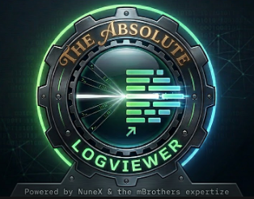

Real-time log tailingSee your logs the instant they happen.
A fast, modern Windows log viewer built on .NET 10 / WPF. Live tail, regex highlight rules, split-pane comparison and context preview — in 12 languages.
Every download is verifiable
Not code-signed yet, so Windows may show “Unknown publisher” — but each release publishes a SHA-256 in version.json, and the app checks it before installing any update over HTTPS. Tampered binaries are rejected automatically.
Everything you wish tail -f had.
Real-time tail
New lines stream in instantly. Scroll up to pause, hit the bottom to resume.
Independent tabs
Each tab is its own workspace — its own set of logs, split, search and ordering. Watch separate projects at once without mixing them.
Split-pane compare
Two independent panes, two files side by side — each with its own search and tail.
Regex highlight rules
Colour whole lines or single words. Word-boundary helpers and a live preview.
Context preview
Hover a filtered line to peek the surrounding lines from the full, unfiltered file.
Built-in auto-update
Standalone & Portable update themselves — integrity-checked over HTTPS.
12 languages
Fully localised UI with instant switching. Dark theme by default.
Clean, dense, keyboard-friendly.


12 languages, switched live.
The whole interface, not just a few strings — change language any time without restarting.
How it works
Install or unzip
One-click ClickOnce, a tiny standalone .exe, or a self-contained portable build.
Point it at your logs
Add folders or single files. It auto-discovers .log files and watches them.
Watch them live
Lines tail in real time with your highlight rules applied. Split, search, filter.
Pick your edition
Three ways to run it — all free, all the same app.
ClickOnce
One-click install that keeps itself up to date automatically. Best for most people.
Standalone
A single ~1.3 MB .exe. Needs the .NET 10 Desktop Runtime installed.
Portable
Self-contained ~160 MB .exe. No runtime, no install — runs from anywhere.
On first launch Windows SmartScreen may say “Unknown publisher” (the app isn’t code-signed yet). Click More info → Run anyway. Verify the SHA-256 if you like — it’s published with every release.
Questions
Is it really free?
Yes — freeware, for personal and commercial use. No account and no cookies; the app only sends anonymous install and update stats, which you can turn off.
Why does Windows say “Unknown publisher”?
The binaries aren’t code-signed yet. Every release publishes a SHA-256 hash you can verify, and the in-app updater checks it automatically before installing.
Which edition should I pick?
ClickOnce if you want effortless auto-updates (needs Microsoft Edge). Standalone if you already have the .NET 10 runtime. Portable if you want zero install.
Where’s the source code?
The app is freeware and the source is private, but bug reports and feature requests are welcome on GitHub.